翼
是机翼，是 C919 直上云霄的国之重器，是北航人“航空报国”的精神基因。
正在装载航迹…
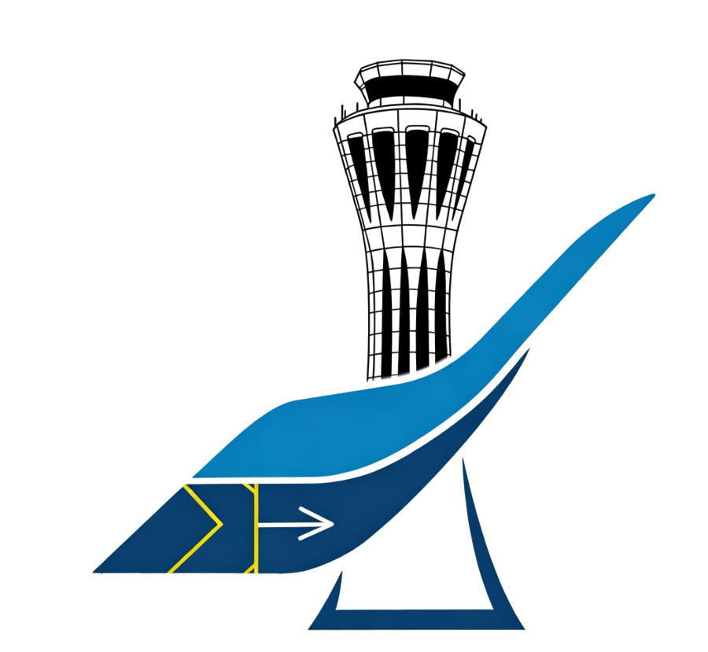
关于我们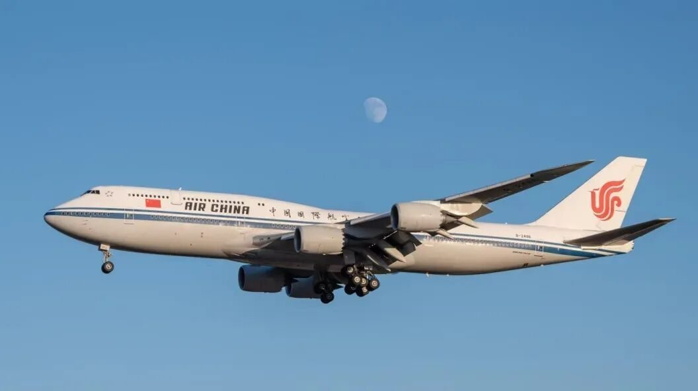
北京航空航天大学飞行学院 · 2026 年暑期社会实践
以青年学子的视角走进民航一线，看见百岗百态；
接住老一辈民航人传递下来的精神火种，再传给下一代。
Why we fly — 时代坐标与出发的动机
“希望民航人 为推动民航业高质量发展、建设交通强国贡献更多力量。”
—— 2024 年 7 月，习近平总书记给厦门航空全体员工回信
是机翼，是 C919 直上云霄的国之重器，是北航人“航空报国”的精神基因。
是薪火，是航路，是 7.7 亿人次背后一条条被精密守护的空中脉络，是一代代民航人用安全纪录接力跑出来的传承。
以青年学子的视角走进民航一线，看见百岗百态；接住老一辈民航人传递下来的精神火种，再传给下一代。
从孩子到前辈、从课堂到公众——我们用一个暑假，完成了一次“相传”的闭环。
理论宣讲从影视桥段与真实陆空通话的对比切入，破除大众对空地沟通的刻板印象，随后系统讲解陆空通话核心准则、航空专用标准化用语与各类空中应急处置信号，并结合真实案例点明规章的意义。
理论之后是孩子们最期待的模拟飞行：队员借助专业飞行软件还原赛斯纳 172 座舱环境，先讲仪表读数，再带着小朋友依次上机，亲手体验滑行、爬升、巡航，把刚学到的空管指令与真实操纵对应起来。
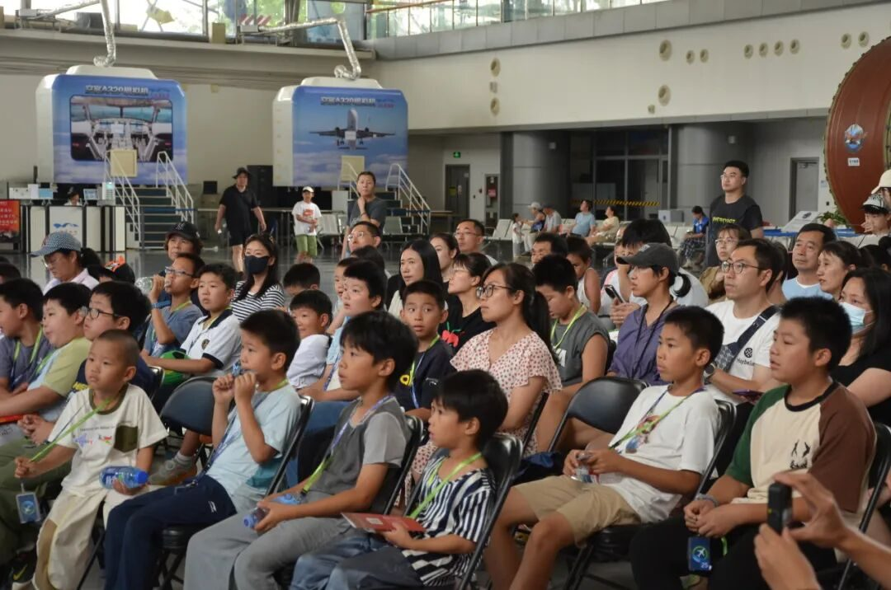
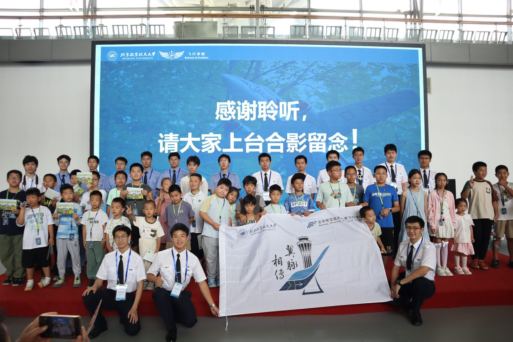
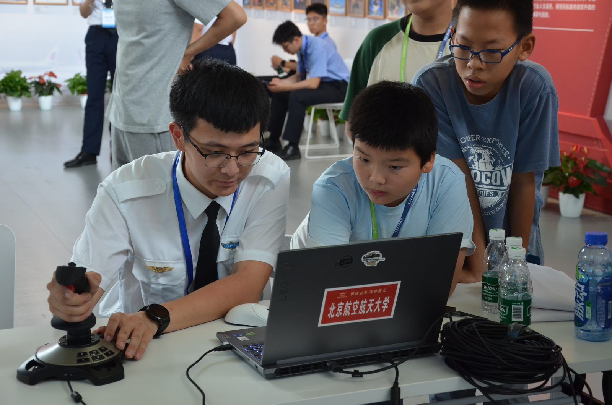
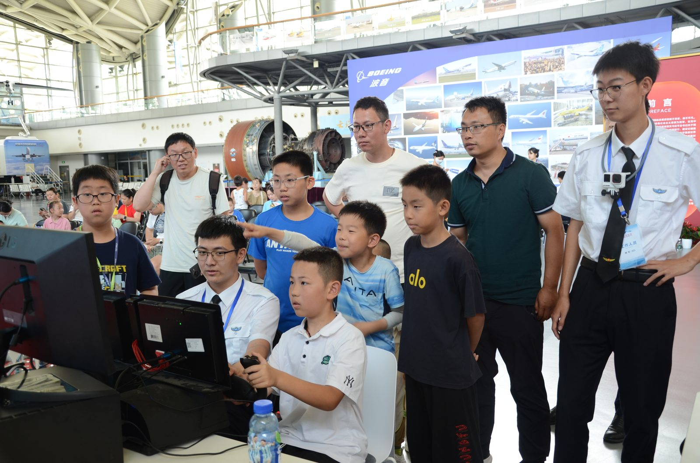
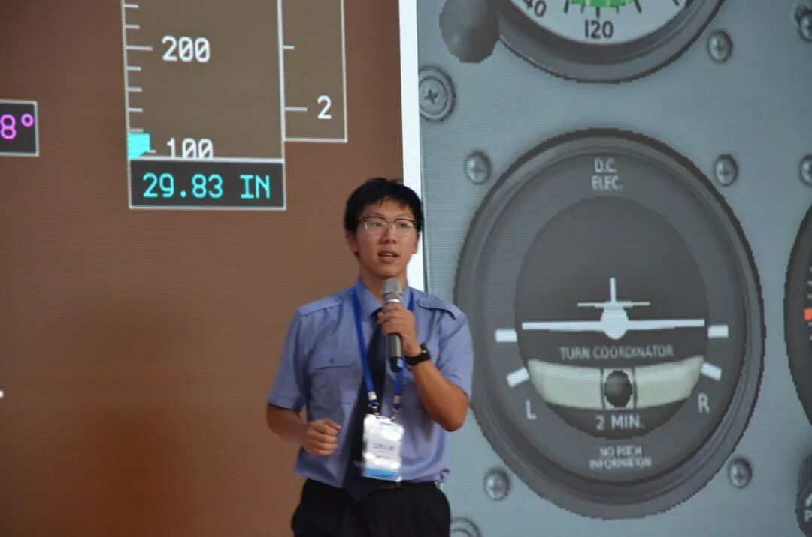
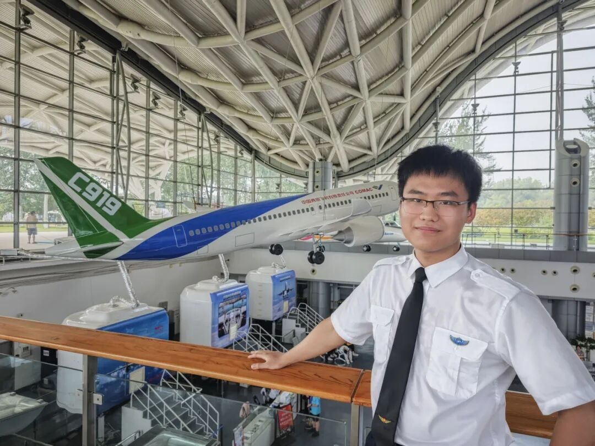
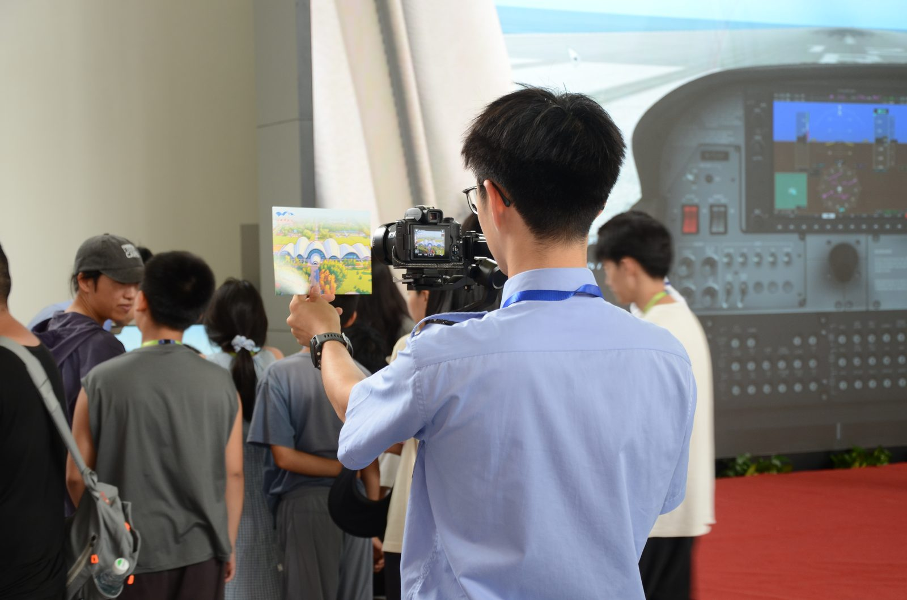
“我发现开飞机真的不简单，需要好多好多练习才能飞得好。我以后也想当飞行员，在蓝天上飞来飞去！”
—— 参与活动的小朋友 韩亦安
从 GOC 的巨型屏幕到航前准备室的放行资料，从模拟机驾驶舱的操纵杆到前辈的讲述——我们第一次站在民航运行的“中枢”里，看见安全是怎么被一航班一航班守出来的。
走进亚洲最大的运行控制中心，系统了解大厅模块划分与各岗位核心职能，看航班计划系统如何支撑航班全生命周期管理。
现场观摩大兴—吉林、大兴—莫斯科两个真实航班的航前准备：放行资料研读、飞行计划制定、飞行签到、酒精测试仪实操。
每位队员独立完成 3—5 分钟标准进近，覆盖 3 海里、5 海里程序，并模拟侧风、风切变、雷雨等特殊工况。
与飞行经历 16 年的机长、执飞 A330 的副驾驶深入交流近 50 分钟，谈休息制度、责任担当、航校学习与职业倦怠。
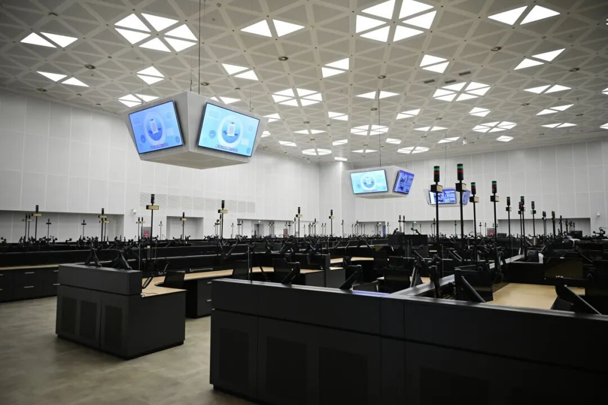
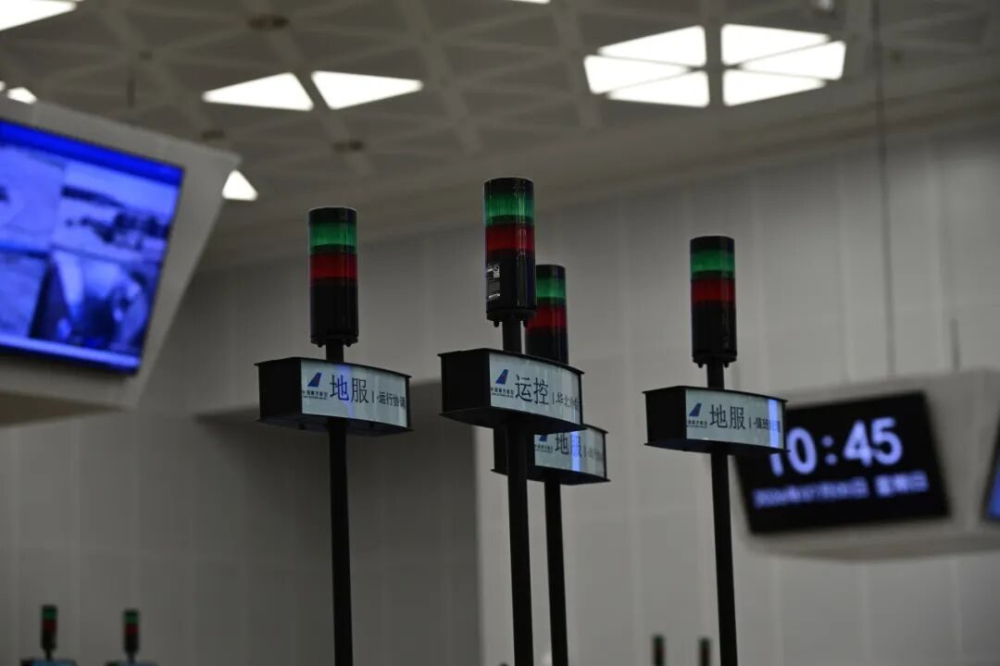
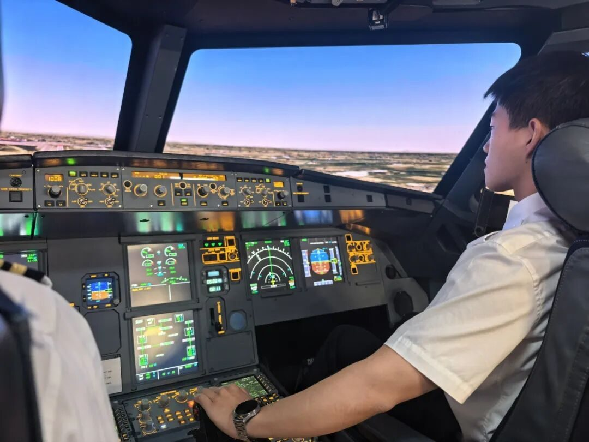
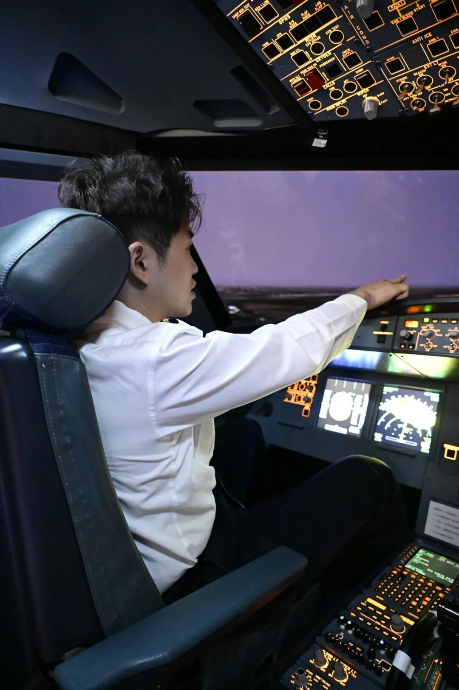
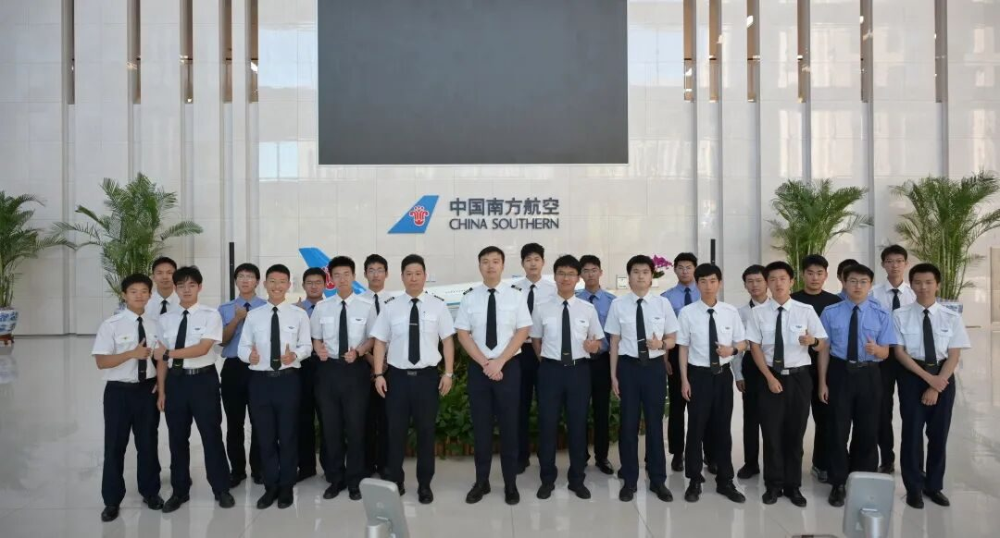
机长、飞行教员，2010 年入职，飞行经历 16 年。
副驾驶，曾在加拿大航校训练约 16 个月，现执飞 A330。
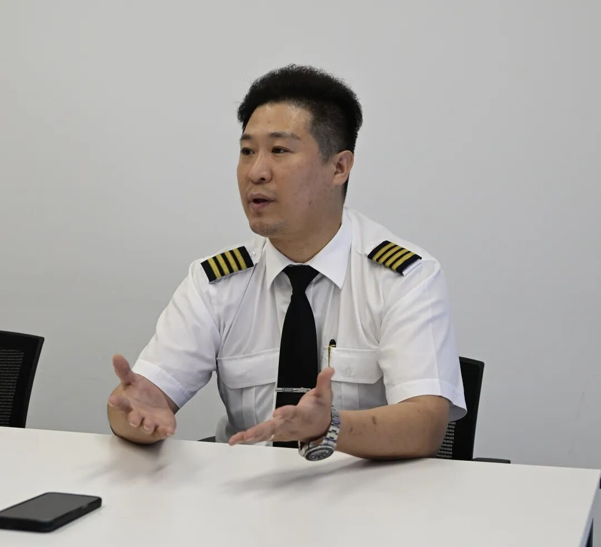
真正的硬约束是法规规定的休息期与执勤期：连续任务须休够 48 小时，两班之间须间隔 10 小时。不足 10 小时，航班必须拉掉、先休息。
还是副驾驶那年飞西宁—北京，带飞机长接到家里电话——父亲去世了，而他的家就在西宁。他说：“咱们先把航班安全飞回去。”落地已是凌晨两点。
倦怠是人性，普遍存在，不必讳言。关键是识别它，识别之后它就不再可怕。
行业内广为流传：先学会为人处世——人做不好，飞行一定飞不好。每个副驾驶在机长眼里也分档次，要努力成为“五星级副驾驶”。
人与人的差距，就是一天一天、一步一步显现出来的。每年年底回头看看：如果 1 月 1 日和 12 月 31 日相比没有任何变化，那这一年就白过了。
* 完整 12 条清单收录于《飞行员职业相关问题交流分享会纪要》。
输出实践纪实长文与深度科普，自 6 月 23 日首篇上线至 7 月底，累计发布图文推送 12 篇、实践 Vlog 2 部。
7 月 17 日上线，主打停机坪实拍与机型档案，把航空浪漫讲给更多普通人听。
同步更新摄影作品与活动动态，与行业账号互动，扩大实践声量。
联合开发“运控数字化认知”前置课程模块，把“学员进企业参观”的单向模式，升级为“企业数字化资源进课堂”的双向赋能。
编制《飞行学员作风养成手册》，建立作风积分制，把航空公司的标准操作程序转化为学员可执行的日常行为规范。
让公费养成生以“未来使用者”的视角，为运行流程优化提供来自一线的外部参考。
用操纵杆输入平滑度、油门响应、航向偏差等数据，补上“知道自己不好、却说不清哪里不好”的反馈缺口。
通过飞行前辈导师库、机长成长轨迹案例集与“职业使命日”，让学员从“要我飞”转向“我要飞”。
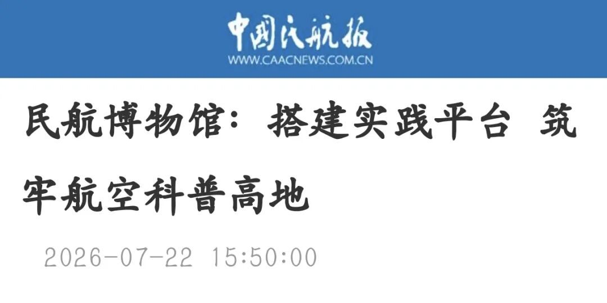
2026 年 7 月 22 日，《中国民航报》、中国民航网刊发《民航博物馆：搭建实践平台 筑牢航空科普高地》，其中“沉浸体验，模拟飞行点燃梦想”一节专门报道了我队的航博科普活动。
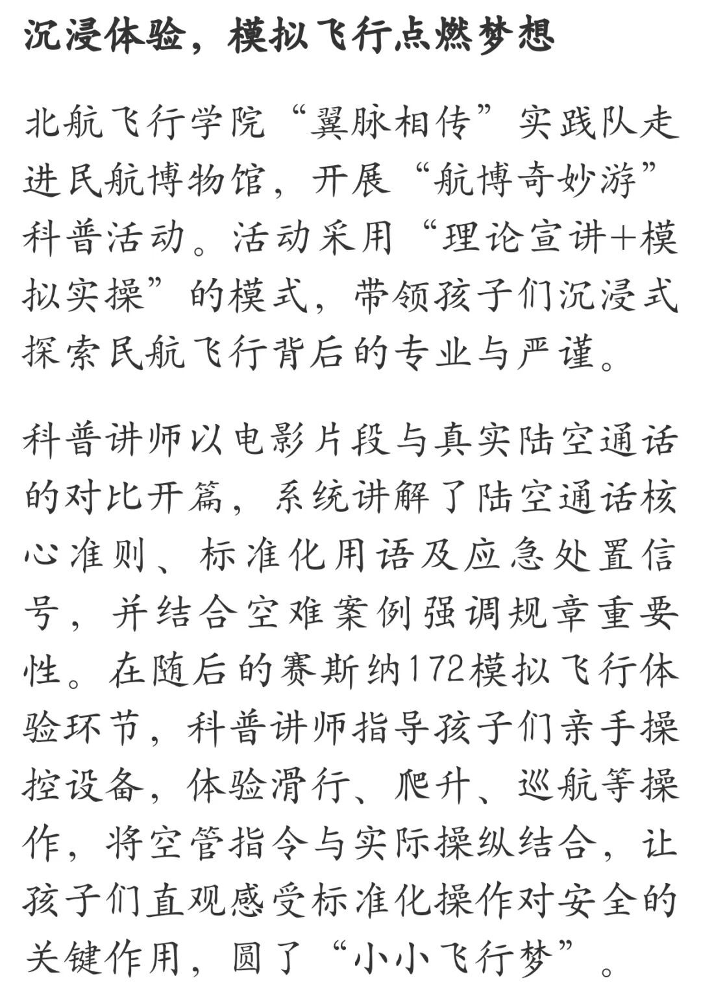
7 月 28 日，民航博物馆官网转载同题文章；南方航空、民航博物馆官方微信公众号对实践队的科普与研学活动进行报道。
短暂的暑期实践落幕，但逐梦蓝天的步履从未停歇。我们将继续怀凌云之志、笃实干之行，深耕民航一线、普及航空文化、传播蓝天正能量，让航空薪火在代代相传中生生不息。
北京航空航天大学飞行学院